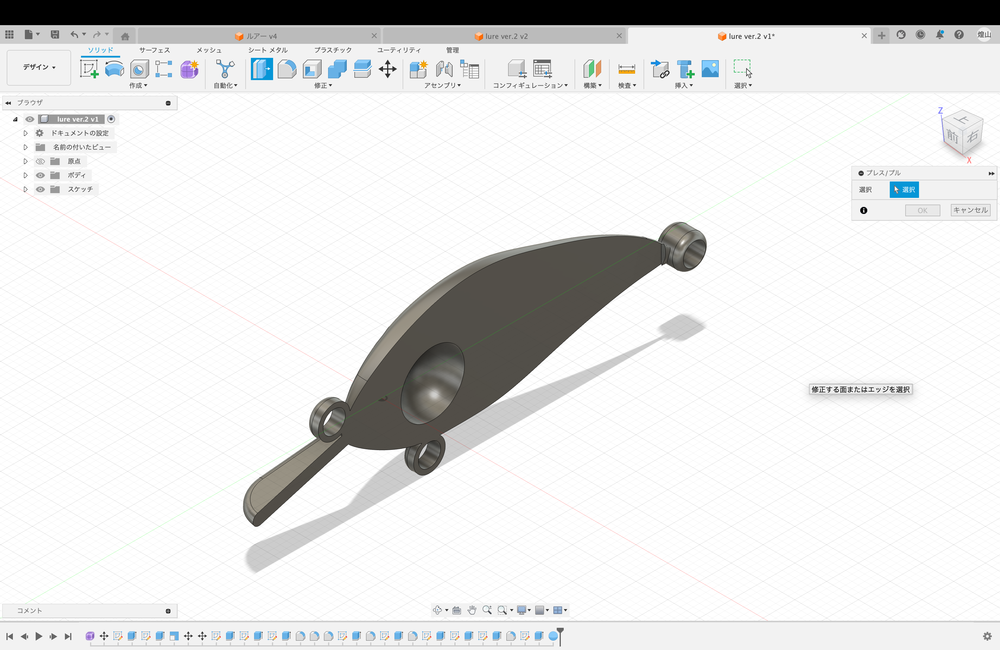
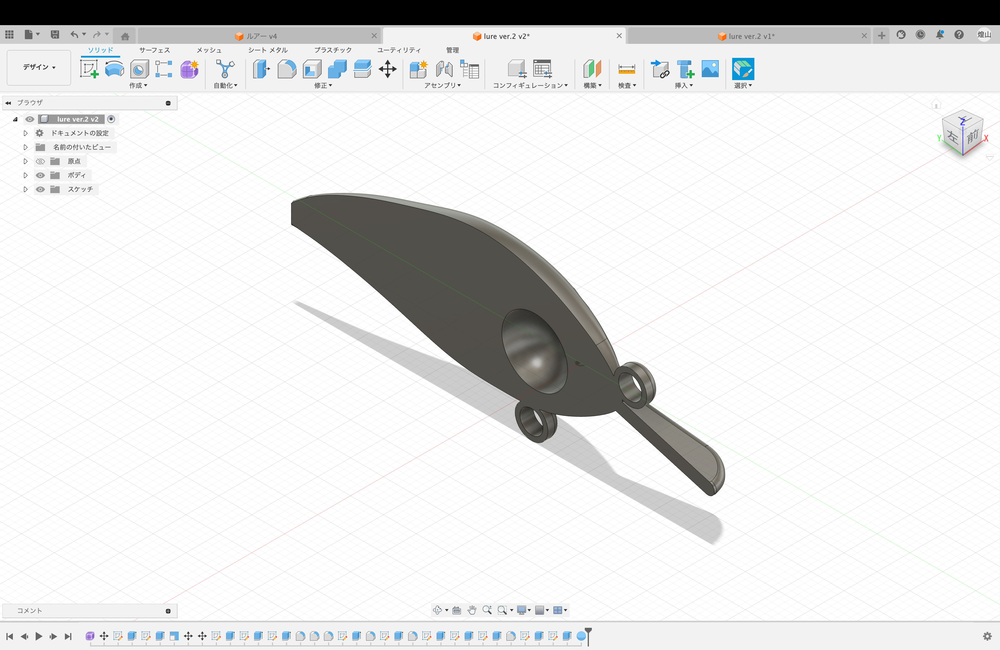

最終課題
ルアー
今回の最終課題で僕が作ったのはルアーです。
僕は昔から釣りが好きで、最終課題で自分の好きなものを作るなら
釣りに関わるものを作りたいと思ってルアーを作りました。
設計図
今回ルアーを完成させるまでに、3回作り直してたどり着きました。

最初に作ったのがこの上の写真のものなのですが、このルアーには三つ問題がありました。
1,シーバスように作ったルアーなのに軽すぎて水に浮いてしまう。
2,重りをつける手段でいいものが思いつかなかった。
3,針をつける輪っかが脆くてすぐ折れてしまう
これらを踏まえて、今度はルアーの種類を変えることにしました。
具体的には、重りをつけて沈めるのは正直ルアーの挙動も考えるとかなり難しいので、
沈まなくてもいいルアーを作ることにしました。そこで、シーバスようのルアーから、
クランクという浅めの海底で使うルアーを作ることにしました。

一つ目のことを生かして、上の写真のような形のルアーにしました。
沈まなくてもいいとはいえ、3m付近までは沈むようにはしたく、リップをつけることにしました
リップというのは、ルアーの先端についてる舌みたいなパーツのことで、これにはルアーを潜らせ、
障害物を避けやすくする役割があります。
プリント

ここでまた問題が発生。
プリントする段階で、サポートが屈強すぎてフックを取り付ける輪っかがサポートを外す時に
折れてしまいました。次は慎重にとリベンジしたのですがやはり折れました。
これ以上輪っかをおおきくするとフックがつけられなくなってしまうので、
もう気合のワンフックルアーで満足することにしました。
（根掛かりは激減するのでリップ付きのこのルアーとは相性◯）
動画
youtube
ルアーの密度が1g/cm3に満たなっかたので沈みませんでした。
内蔵型のお守りなら成功すると信じて設計図は書いたのですが、印刷が間に合いそうになく、
最後なのに中途半端になってしまいました。
市場に出回っているルアーの設計には、何回もの試行錯誤上に成り立っているのだなと身にしみて理解しました。
改善版


ルアーの真ん中を球体上に切り抜き、重りりを入れれるようにしました。
重りりを詰めた後接着して完成します。課題提出に間に合わなかったのですが、
完成させたいです。